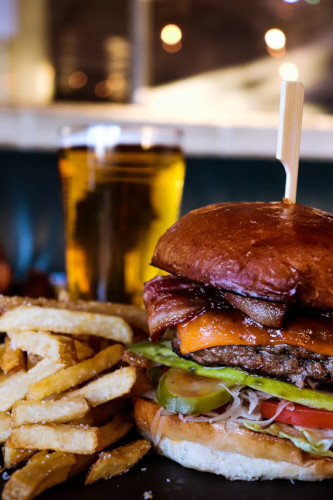

Bacon Cheeseburger

Ingredients
- Hamburger Buns
- Hamburger Patties
- American Cheese Slices
- Bacon
- Pickles
- Lettuce
- Tomato
- Onion
- Optional: Mayonnaise, Mustard, Ketchup
Steps to make the bacon cheeseburger
- Preheat oven to 375 then add the bacon and cook for about 15 minutes or until crispy.
- Sprinkle salt and pepper to both sides of the hamburger patties.
- Grill patties on medium-high heat on the grill. About 5 minutes per side.
- While patties and bacon are cooking, prepare the tomato, lettuce, and onion.
- Sautee onion slices on skillet with canola oil until translucent. Can keep onion raw if preferred.
- Build your burger and enjoy!